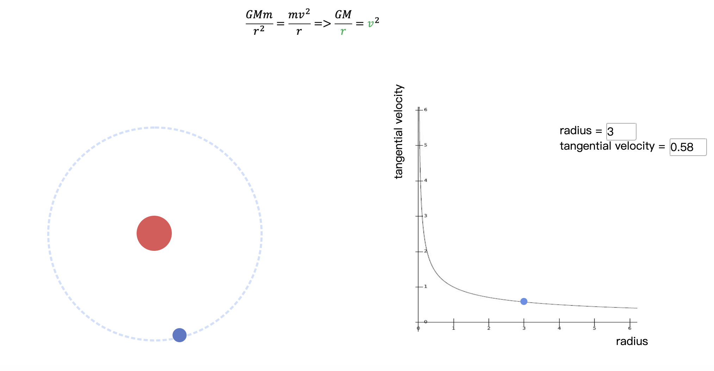
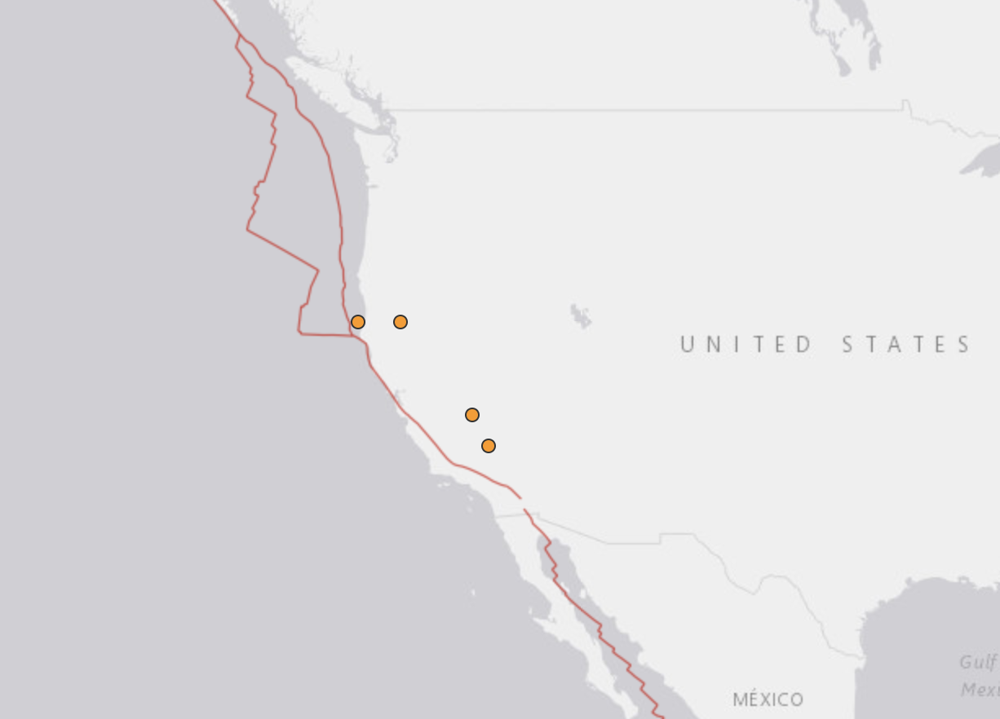

Information visualization course project
Build webpage to help readers learn the celestial movement based on universal gravitation
Deploy and beautify the webpage to make it clearer and more attractive using HTML&CSS.
Create interaction modules to simulate the circular motion of celestial bodies using JavaScript

Research Data Analyst & programmer, Shanghai Jiao Tong University
Design a platform for automatically downloading and processing tsunami data
Obtain data of earthquake and tsunami from the website using Website Crawler
Process data and built a model that can automatically calculate the required information of tsunami using math algorithm. Create a visual interface using Python matplotlib and JavaScript.
